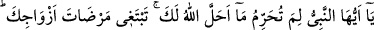
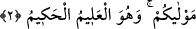

NİÇİN KENDİNE
HARAM EDİYORSUN?
Bismillâhirrahmânirrahîm
1. Ey Peygamber! Eşlerinin rızâsını gözeterek Allah’ın sana helâl kıldığı şeyi
niçin kendine haram ediyorsun? Allah çok bağışlayan, çok esirgeyendir.
2. Allah, (gerektiğinde) yeminlerinizi bozmanızı size meşrû kılmıştır. Sizin
yardımcınız Allah’tır. O, bilendir, hikmet sâhibidir.
“Ey Peygamber! Eşlerinin rızâsını gözeterek Allah’ın sana helâl kıldığı şeyi niçin
kendine haram ediyorsun?” âyet metninde yer alan “lime” kelimesinin aslı “limâ”dır.
Burada yer alan soru haram kılmanın hoş görülmediğini ifâde etmek için getirilmiştir.
İhlâl kelimesi nasıl helâl kılmak mânâsına geliyorsa, tahrîm kelimesi de haram kılmak
demektir.
Rivâyet olunduğuna göre Peygamberimiz (s.a.) Mısır hükümdarı el-Mukavkıs’ın
kendisine hediye ettiği Kıptî asıllı Mâriye ile Hz. Âişe’nin gününde/nöbetinde gizlice
baş başa kalmıştı. Hz. Hafsa (r. anhâ) bunu öğrenince Peygamber Efendimiz (s.a.) ona:
“Bunu benim için gizli tut, Âişe’ye bildirme, ben Mâriye’yi kendi nefsime haram kıldım.
Sana müjde vereyim ki, benden sonra ümmetimin işini Hz. Ebû Bekir ve Hz. Ömer
alacaklardır” demişti. Fakat Hz. Hafsa bunu Hz. Âişe’ye (r. anha) haber vermiş,
kendisine verilen sırrı saklayamamıştı. Hz. Hafsa ile Hz. Âişe, Hz. Peygamber
Efendimiz’in diğer eşlerine karşı dost ve birbirleriyle dayanışma içindeydiler.[203]
Süheylî (r.h) der ki: Peygamber Efendimiz (s.a.) Hz. Hafsa’ya, gördüğünü Hz.
Âişe’ye ve diğer eşlerine bildirmemesini emretmişti. Hz. Hafsa Peygamber Efendimiz’i
ümmü veledi/oğlunun annesi olan Kıptî asıllı Mâriye binti Şem’ûn’un evinde görmüştü.
Mâriye, daha onsekiz aylık iken süt emme çağında vefât eden Peygamberimiz’in oğlu
Hz. İbrahim’in annesiydi. Peygamberimiz (s.a.) böylece hanımlarının bu gerçeği
duymaları halinde kıskançlığa kapılmalarından korkmuş ve bu sözü Hz. Hafsa’ya gizlice
söylemişti. Ancak Hz. Hafsa kendisine söylenmiş olan sözü yaydı.
Bazılarına göre Peygamber Efendimiz (s.a.) Hz. Hafsa’nın gününde Hz. Mâriye ile